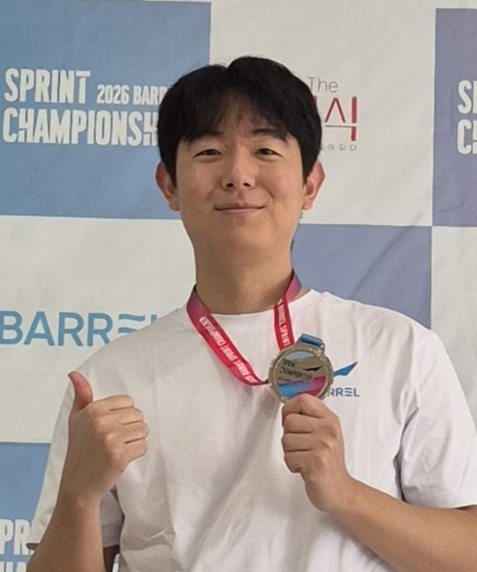

Seungwoo Kim 김승우
Specializes in finite element model development for nonlinear solid mechanics, covering anisotropic plasticity and fracture of metals and ceramics. Develops dislocation-based distortional hardening models that predict the strength of steel after multi-step forming and thermal aging. Builds plasticity and ductile fracture models for thin-walled battery casings, and phase-field fracture models that quantify cryogenic toughening in AlN ceramics. Implements these models as ABAQUS user material (UMAT) and user element (UEL) subroutines, and couples reduced-order finite element frameworks with machine learning for forming process optimization.

Featured research
AI-driven process simulation based on a thermo-mechanical anisotropic hardening model
A dislocation-based distortional hardening model predicts the yield strength of API X52 linepipe steel after forming, flattening and thermal aging within a mean error of 3.4%.